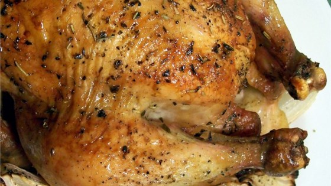

Marsala Marinated Skirt Steak
"I was in Santa Monica a few years ago, where I ordered a chicken Parmesan that featured a garlic, rosemary, and Marsala-spiked sauce. I loved the subtle sweetness the wine added to the tomato. For whatever reason, I thought of those flavors while brainstorming a quick skirt steak marinade, and this is what happened. Skirt steak is always great on the grill and doesn't need much help, but I love how this came out."
Recipe by: Chef John

Roast Chicken with Thyme and Onions
"People are always raving about chicken and rosemary, when I think chicken and fresh thyme is superior. This is so easy it's criminal, and the results are fabulous. I sometimes add four or five bulbs of green garlic if I find it at the farmers' market."
Recipe by: SABRINATEE